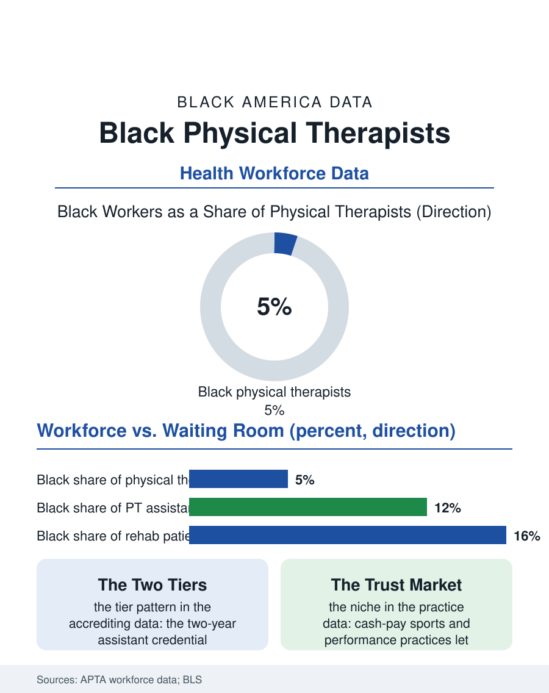

Black Employment
Hands That Heal: Black Physical Therapists
Physical therapy's doctoral door lifted its wages and narrowed its workforce, leaving Black therapists at about one in twenty in clinics full of Black patients. The PT file.

Physical therapy is one of health care's growth occupations, riding the aging population and the sports economy, with doctoral entry, strong wages, and a workforce the professional association's own counts describe plainly: Black physical therapists hold roughly four or five of every hundred positions, in a profession whose patients, in the rehabilitation clinics of this atlas, are disproportionately Black. This article reads the physical therapy file.
The Doctoral Door
The profession raised its entry credential to the clinical doctorate, the DPT, in the last generation, a professionalization that lifted status and wages while lengthening and repricing the pipeline in ways the workforce data now display. The DPT takes three years after the bachelor's degree, at tuition levels that produce graduate debt loads comparable to other health doctorates, and the applicant pool sorts accordingly. Black students enroll in DPT programs at shares in the mid-single digits in the accrediting body's annual data, and they graduate into a profession whose clinical education, the rotations that decide hiring, runs through affiliation networks between programs and clinics that reproduce regional and institutional patterns. The profession's assistant tier, the physical therapist assistant with the two-year degree, shows a notably more diverse workforce in the same counts, reproducing the health care pattern this atlas records from nursing to dentistry: the shorter, cheaper credential diversifies; the doctoral summit does not. The work itself, though, is among the most relational in medicine, hour-long sessions, hands on the patient, progress measured in function restored, and the clinics report what the patient-experience literature confirms: patients ask for therapists who understand their lives, and the demand for Black therapists from Black patients exceeds the supply in market after market, a demand the private practice tier monetizes directly.
Clinics, Sidelines, and Ownership
The employment settings sort the profession's economics. Hospital and nursing facility work offers salary stability; outpatient orthopedic clinics, the industry's volume center, increasingly operate as chains whose productivity metrics, patients per hour, define the modern job's texture and its burnout file; sports and performance settings carry the prestige; and private practice ownership, historically the profession's wealth path, is consolidating under the same platform economics as the rest of outpatient care. Black physical therapists appear across the settings with the file's expected gradient, well represented in hospital and public systems, thinner in the chain clinics' management tiers, and present in ownership through the sports-performance and cash-pay niches where a reputation with athletes and active patients converts to a book of business unmediated by insurance panels. The cash-pay niche deserves its analysis: by stepping outside insurance, performance-oriented practices sell time and attention at market prices, and Black practitioners with deep community and athletic networks have built visible firms in this segment, an ownership pathway that bypasses the credential-of-capital problem by selling the scarcest asset in the file, which is trust denominated in recovered movement. The military and veterans' systems employ another substantial cohort, the rehabilitation of service members being one of the federal health system's core missions.
The Pipeline's Next Cohort
The profession knows its numbers and has begun, in the association record, to treat them as a quality problem rather than a public relations one: the patient population's diversity is a clinical fact, concordance affects adherence to the home exercise programs on which outcomes depend, and a profession that cannot staff itself in the image of its patients will underperform for them measurably. The pipeline interventions mirror the other health professions' playbook with one addition suited to the field: the undergraduate major. Exercise science and kinesiology programs, popular with Black students and stocked with former athletes, are the DPT's natural feeder, and the articulation partnerships between HBCU kinesiology programs and DPT programs are the file's most concrete new machinery. Athletic training, the adjacent bachelor's-level profession, functions as another feeder and another file, its own workforce diversifying faster than the doctorate above it. The physical therapy file closes in the clinic gym, where the profession's promise is unusually tangible: a stroke survivor relearning stairs, a lineman rebuilding a knee, function returning by degrees under a therapist's hands. The degrees on the wall say the field professionalized. The workforce counts say the professionalization priced its door. Between those two facts the next decade of cohorts will decide whether the hands doing this intimate, effective work belong, in proportion, to the communities whose bodies fill the waiting rooms.
More in Black Employment
The Black Unemployment Rate: The Two-to-One Pattern
Black unemployment runs at roughly twice the White rate — 5.5 percent against 3.3 percent in annual averages — a ratio stable across five decades of federal data. How it is measured and why it persists.
Black Median Weekly Earnings: The 80-Cent Ratio
Black full-time workers earn a median of about $900 a week — roughly 80 cents for every dollar White workers earn. The BLS earnings data by group, gender, and occupation.
Black Labor Force Participation: Working at National Rates
Black labor force participation runs at roughly the national rate — and Black women participate at higher rates than White women. The BLS participation data.
Source: American Physical Therapy Association workforce reports; Commission on Accreditation in Physical Therapy Education data; Bureau of Labor Statistics.